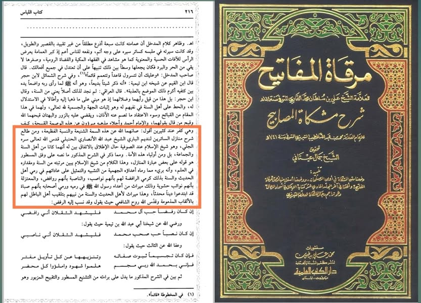

শাইখুল ইসলাম ইবনু তাইমিয়া ও ইবনুল কায়্যিম রাহ'কে মুল্লা আলি কারি রাহ'র মূল্যায়ন
৫ জুলাই, ২০২৩
শাইখুল ইসলাম ইবনু তাইমিয়া ও ইবনুল কায়্যিম রাহ'কে মুল্লা আলি কারি রাহ'র মূল্যায়ন—
ইবনু হাজার হাইতামির সবচে' প্রসিদ্ধ ছাত্রদের একজন হলেন হানাফি মাজহাবের বিখ্যাত ইমাম মুল্লা আলি কারি রাহ. (মৃত্যু-১০১৪ হি.)। হাইতামি যখন ইবনু তাইমিয়া ও ইবনুল কায়্যিম রাহ-এর নামে দেহবাদের মিথ্যা তুহমত দিয়ে কুৎসা রটান, তখন তারই ছাত্র মুল্লা কারি রাহ. এ অপবাদের অংশবিশেষ উল্লেখপূর্বক ওস্তাদের বিরোধিতা করে বলেন—
أقول: صانهما الله عن هذه السمة الشنيعة والنسبة الفظيعة، ومن طالع شرح منازل السائرين لنديم الباري الشيخ عبد الله الأنصاري الحنبلي تبين له أنهما كانا من أهل السنة والجماعة، بل ومن أولياء هذه الأمة.
আল্লাহ তাঁদের উভয়কে এ কুৎসিত-কদাকার ট্যাগ-দাগ থেকে রক্ষা করুন। শাইখ আব্দুল্লাহ আনসারি কৃত শরহু মানাযিল আস-সায়িরিন যে অধ্যয়ন করবে, তার কাছে পরিষ্কার হয়ে যাবে যে, তাঁরা উভয় (ইবনু তাইমিয়া ও ইবনুল কায়্যিম) আহলেসুন্নাহ ওয়াল-জামাআতের অন্তর্ভুক্ত; বরঞ্চ এ উম্মাহর আওলিয়াদের অন্তর্ভুক্ত ছিলেন।
[মিরকাতুল মাফাতিহ-৮/২১৬]
এরপর তিনি আরও স্পষ্ট করে বলেন—
وأنه بريء مما رماه أعداؤه الجهمية من التشبيه والتمثيل على عاداتهم في رمي أهل الحديث والسنة بذلك، كرمي الرافضة لهم بأنهم نواصب، والنواصب بأنهم روافض، والمعتزلة بأنهم نوائب حشوية، وذلك ميراث من أعداء رسول الله - صلى الله عليه وسلم - في رميه ورمي أصحابه، بأنهم صباة قد ابتدعوا دينا محدثا، وهذا ميراث لأهل الحديث والسنة من نبيهم بتلقيب أهل الباطل لهم بالألقاب المذمومة.
“তাঁর (ইবনু তাইমিয়ার) শত্রু জাহমিয়ারা তাঁকে যে তাশবিহ ও তামসিলের অপবাদ দেয়, তিনি তা থেকে সম্পূর্ণ মুক্ত। আহলেহাদিস ও সুন্নাহকে এ অপবাদ দেয়া জাহমিয়াদের রীতি। যেমনটা রাফেজিরা তাঁদেরকে নাসেবি বলে অপবাদ দেয়। আবার নাসেবিরা অপবাদ দেয় রাফেজি বলে। মু'তাযিলারা তাঁদের অপবাদ দেয় নাওয়ায়িব আর হাশাবি বলে। আর ওটি (অপবাদ দেয়া) তো রাসূল ﷺ এর দুশমনদের থেকে প্রাপ্ত মিরাস, যারা রাসূল ﷺ ও তাঁর সাহাবিদের অপবাদ দিয়ে বলত, এরা হচ্ছে ‘সাবিয়ি’; তারা নতুন এক ধর্মের (ইসলাম) আবিষ্কার করেছে। আর এটি (অপবাদের সম্মুখীন হওয়া) হচ্ছে নবি ﷺ থেকে আহলেহাদিস ওয়া সুন্নাতের পাওয়া মিরাস যে, বাতিলপন্থীরা তাঁদেরকে নিন্দনীয় উপাধিসমূহ দিয়ে থাকবে।” [প্রাগুক্ত]
মুল্লা আলি কারি রাহ-এর ধ্রুব সত্য এ বক্তব্যের প্রমাণ ইবনু তাইমিয়ার পর থেকে আজ অবধি আমরা দেখতে পাচ্ছি। সেকালে তাঁকে ’দেহবাদি’ ও ‘হাশাবি’ ট্যাগ দিত সুবকি আর হাইতামিরা, আর এ কালে এসে দিয়েছে যাহিদ আল কাওসারি ও সাঈদ ফু'দা আর কিছু বাঙালী। অথচ, ইবনু তাইমিয়া কোথাও ‘দেহ’ সাব্যস্ত করেন নাই। তবুও যারা অপবাদ দিয়েছে, তারা কি মুল্লা আলি কারি রাহ-এর ভাষায় আহলেসুন্নাহ ওয়াল-জামাতের দুশমন ‘জাহমিয়া’ বলে প্রমাণিত হয় না?
#আল_উলু
